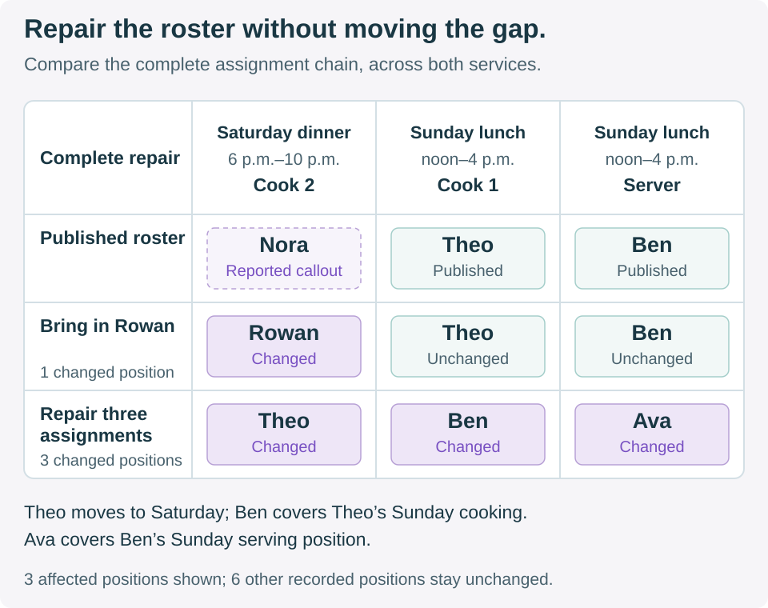
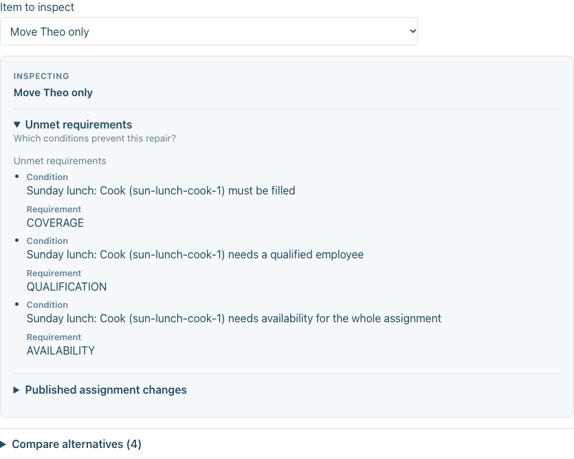
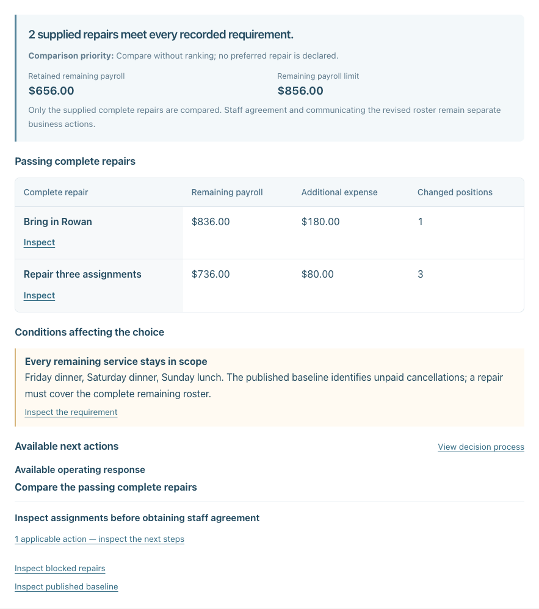
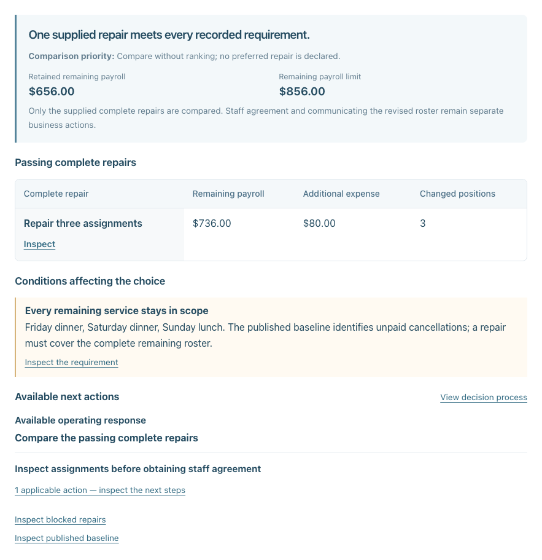
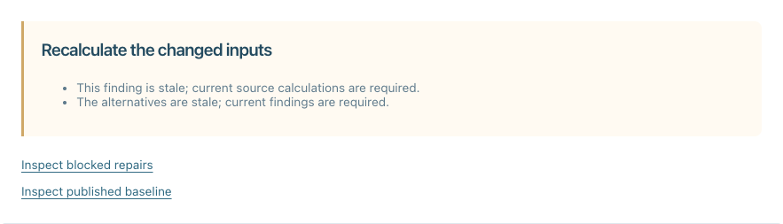
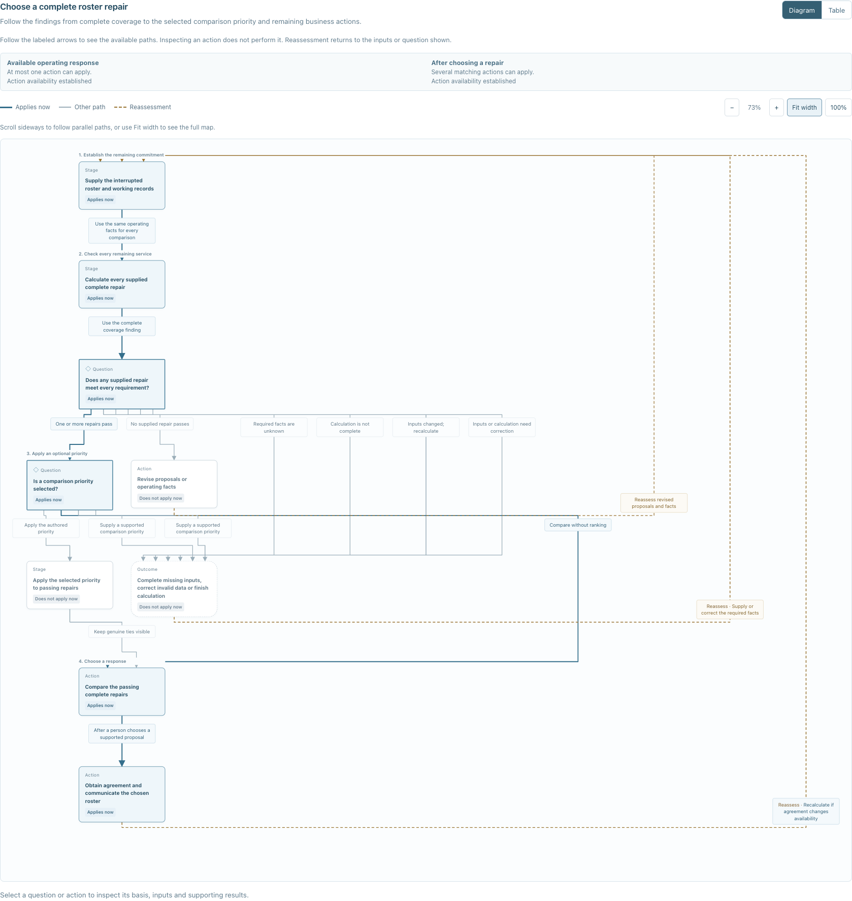
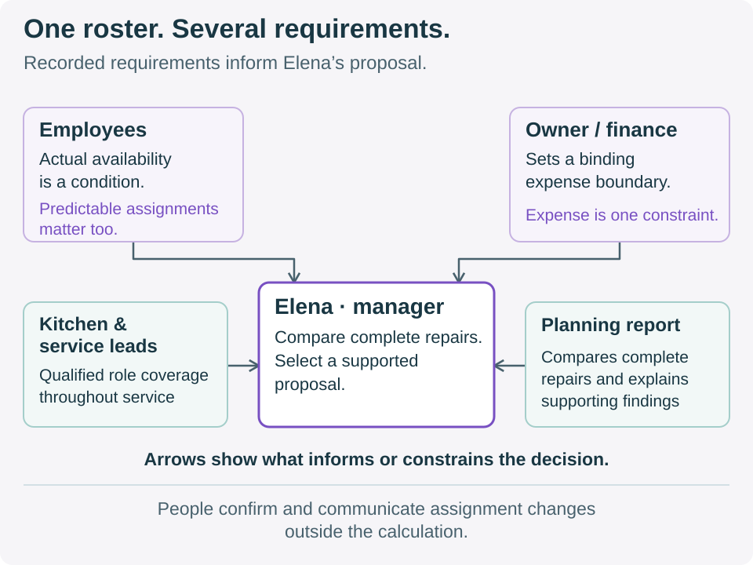

On Friday morning, Elena has a restaurant service to protect and a roster her team has already arranged their lives around. Nora calls out: she cannot work Saturday dinner. Reservations are booked. The kitchen still needs two qualified cooks from 6–10 p.m., alongside a server.
Elena could call her usual relief cook, ask the staff group chat or move someone from Sunday. Each could supply a name quickly. Her harder question is whether the resulting roster still works for every remaining recorded service, within the employee conditions and labor boundary.
Elena, the restaurant and the records are fictional. The worked case uses Repair a published restaurant roster 1.1.0 in Decision Lab’s Restaurant operations collection. It compares four supplied complete repairs within a configured roster; it does not generate every possible schedule. Open the workflow and follow the shared setup instructions.
Fill the gap without moving it somewhere else.
The question for this assessment is which of the four supplied complete repairs meets every recorded requirement? A qualified name in Saturday’s empty cell is only part of that answer. Elena needs to establish which complete proposals work before deciding what to prefer.
A complete arrangement here is a complete remaining roster: who fills each cooking and serving position, throughout its interval, across Friday dinner, Saturday dinner and Sunday lunch. Earlier work still matters to the recorded weekly-hours and rest limits.
Elena considers four repairs. Leaving the gap fails Saturday’s coverage. Moving Theo from Sunday lunch fills Saturday, but leaves Sunday short. Bringing in Rowan can preserve the other assignments. A coordinated repair moves Theo to Saturday, Ben from Sunday serving to cooking, and Ava into Sunday’s serving position. Ben has both recorded qualifications; he occupies one position at a time.


The other six published positions stay unchanged in all four candidates. The calculation checks each complete candidate against role coverage, qualifications, full-interval availability, overlapping assignments, declared rest and hours, and remaining payroll. A filled cell alone cannot establish those findings.
| Complete repair | Recorded finding | Remaining payroll | Changed published positions |
|---|---|---|---|
| Leave the gap | Saturday dinner: one required cook position is unfilled. | $656 | 1 |
| Move Theo only | Sunday lunch: one required cook position is unfilled. | $656 | 2 |
| Bring in Rowan | Meets requirements | $836 | 1 |
| Repair three assignments | Meets requirements | $736 | 3 |
The $856 remaining-payroll limit leaves $200 beyond the $656 retained after Nora’s cancelled, unpaid shift is removed. That is the expense baseline used here. Meeting the limit does not settle which feasible repair Elena should prefer.
Check the whole roster before choosing a name.
Elena opens the roster example. Its link installs the collection when needed and opens an analysis with the supplied fictional roster. She can also start a fresh case from the installed workflow with Start analysis. In Inputs, the Repair decision controls expose the relief cook’s availability, the remaining-payroll boundary and the comparison priority. Supporting records holds the named employees, qualifications, working intervals and complete proposed repairs.
For the first calculation, Rowan is available from 6 p.m. until 10 p.m. on Saturday, the remaining-payroll limit is $856, and Comparison priority is Compare without ranking. Elena keeps the other supplied records unchanged, chooses Apply inputs after any edits, then Calculate.
The Decision summary leads with two passing repairs. Elena opens Supporting reports → All repairs to inspect the rejected shortcuts. Selecting Move Theo only exposes its Sunday coverage failure: a move that fills Saturday’s vacancy has not repaired the remaining commitment.


“Available” has to cover the whole assignment.
Now change one fact. Rowan can still start at 6 p.m., but must leave at 8 p.m. The proposed four-hour assignment is unchanged. So are the other employees, qualifications, requirements, pay quotes and candidate repairs.
In Repair decision → Availability, Elena changes Available until on Saturday from 10:00 p.m. to 8:00 p.m. and chooses Apply inputs. The earlier findings are now outdated; she must choose Recalculate before relying on a current answer.
Shared basis. The same four complete repairs, qualifications, other availability, earlier work, flat fees and $856 remaining-payroll limit. The first calculation identifies feasible alternatives without ranking them.
What changes. Only Rowan’s recorded Saturday availability ends earlier: 8 p.m. instead of 10 p.m. The proposed dinner assignment remains 6–10 p.m.
Rowan can stay until 10 p.m.
Two supplied repairs meet the requirements.
- Rowan’s availability
- 6–10 p.m.
- Feasible supplied repairs
- 2 of 4
- Comparison priority
- Compare without ranking


Elena can consider bringing in Rowan or making the three coordinated changes. This calculation establishes no preferred repair.
Rowan must leave at 8 p.m.
The relief repair fails the availability check.
- Rowan’s availability
- 6–8 p.m.
- Feasible supplied repairs
- 1 of 4
- Comparison priority
- Compare without ranking


Elena cannot count Rowan through closing. The coordinated repair remains feasible; another alternative needs to be supplied and assessed before it can enter the comparison.
What this means for the decision. The named replacement is the same. The recorded time window changes whether that complete repair meets the requirements; a preference cannot extend someone’s availability.
The relief repair fails the full-interval availability requirement: Rowan’s recorded window does not cover 8–10 p.m. Elena cannot count those two unavailable hours as cooking capacity. The coordinated repair remains feasible under the supplied facts.
After an input changes, recalculate the finding
This is the intermediate screen after Elena applies the earlier finish, before she recalculates. The previous answer has an outdated basis. A current calculation is needed to establish which repairs still work.


Elena could seek revised availability, change a complete proposed repair using the listed employees, or have another option authored. Each needs another assessment. The calculation does not extend Rowan’s availability or invent cover for the final two hours.
Follow the decision process
Open Decision process to see why the next action depends on the finding. Passing repairs lead to a comparison, with an optional priority. If no supplied repair passes, Elena needs revised proposals or facts. Missing information and outdated calculations need attention before either conclusion is supported.


The graph also shows Obtain agreement and communicate the chosen roster as a business action after a person chooses. Inspecting that action does not contact anyone, record their agreement or publish a roster.
One roster has to reconcile several needs.
The kitchen and service leads need qualified coverage. Employees need their actual availability respected and care about changes to published assignments. The owner sets an expense boundary. Elena must turn those conditions into a proposal she can discuss with the people affected.


We classify this as a qualified-staff allocation problem across time. Its decision pattern is repairing an existing commitment by comparing complete alternatives. Hermod’s workflow applies the reusable Complete a Commitment assessment pattern: each candidate represents the complete remaining roster, and coverage, compatibility and expense reasoning checks whether its recorded obligations hold together. The restaurant supplies the concrete people, services and limits.
Elena has alternatives she can explain.
With Rowan available until 10 p.m., Elena has two feasible supplied repairs. With Rowan available only until 8 p.m., she has one. The requirement to cover the entire shift stays fixed; Rowan’s shorter availability changes which proposals Elena can take to the team.
These feasibility-only calculations deliberately establish no preferred repair. With full availability restored, Elena still has a business choice: pay more to preserve the other published assignments, or make the cheaper coordinated changes. Follow how an explicit priority changes which repair is preferred.
In the shorter-availability situation, Elena takes the coordinated repair to Theo, Ben and Ava. She can explain who would move, which services remain covered and why Rowan’s shorter window cannot cover Saturday. She still needs their agreement and must communicate any resulting roster through the restaurant’s normal process. If those conversations change the recorded availability or proposed assignments, she updates the inputs and recalculates.
That resolves the immediate analysis: Elena has a complete supported proposal, including its consequences for Sunday. A passing calculation has not made the staffing commitment on anyone’s behalf.
For a related, narrower allocation problem, see how Alex balances floor coverage and promotion staffing. That example uses aggregate counts within one evening. This one adds named employees, roles and consequences across services.